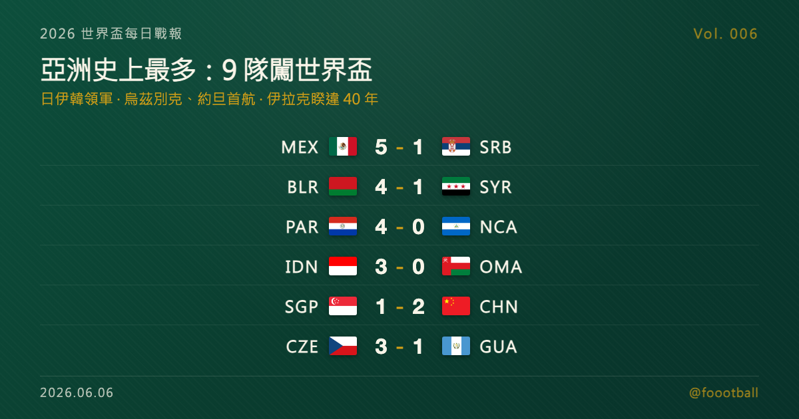

亞洲史上最多：9 隊闖進 2026 世界盃——日伊韓領軍，烏茲別克、約旦首次寫歷史

2026 世界盃每日戰報 Vol. 006
§1 即時比分戰報（6/5 國際熱身賽窗口）
| 賽事 | 比分 | 場館 | 焦點 |
|---|---|---|---|
| 🇲🇽 墨西哥 — 🇷🇸 塞爾維亞 | 5 - 1 | 托盧卡 Nemesio Díez | 地主狂勝，含 2 記烏龍；巴斯克斯、希梅內斯、查維斯破門 |
| 🇧🇾 白俄羅斯 — 🇸🇾 敘利亞 | 4 - 1 | 明斯克 國家足球場 | 主場 4-1 大勝 |
| 🇵🇾 巴拉圭 — 🇳🇮 尼加拉瓜 | 4 - 0 | 亞松森 Defensores del Chaco | 世盃前主場送別戰完勝 |
| 🇨🇿 捷克 — 🇬🇹 瓜地馬拉 | 3 - 1 | 哈里森（美國） | 希克先拔頭籌，美國備戰收官 |
| 🇷🇺 俄羅斯 — 🇧🇫 布吉納法索 | 3 - 0 | 伏爾加格勒 Arena | 三人建功 |
| 🇮🇩 印尼 — 🇴🇲 阿曼 | 3 - 0 | 雅加達 Gelora Bung Karno | 亞洲對決，印尼完封 |
| 🇸🇬 新加坡 — 🇨🇳 中國 | 1 - 2 | 新加坡 Jalan Besar | 中國靠歸化前鋒塞爾吉尼奧＋張玉寧點球客勝 |
| 🇬🇪 喬治亞 — 🇧🇭 巴林 | 2 - 0 | 第比利斯 | 克瓦拉茨赫利亞 77' 點球鎖勝 |
| 🇭🇺 匈牙利 — 🇫🇮 芬蘭 | 2 - 1 | 布達佩斯 Puskás Aréna | 瓦爾加梅開二度 |
| 🇹🇭 泰國 — 🇰🇼 科威特 | 2 - 2 | 巴吞他尼 BG Stadium | 泰國半場 2-0 遭逆轉追平 |
13 場國際熱身賽橫跨歐、亞、美洲。最有份量的是地主墨西哥主場 5-1 狂掃塞爾維亞——含 2 記烏龍球，世界盃前一週氣勢拉滿。另外摩爾多瓦 2-2 保加利亞、斯洛伐克 2-2 蒙特內哥羅、亞塞拜然 0-2 馬爾他 3 場未列入上表。不過今天的重點不在單場比分，而在 §4：距離 6/11 開幕只剩 5 天，我們把「亞洲到底有幾支球隊闖進這屆世界盃、又是哪幾支」一次講清楚——答案可能比你以為的多一隊。
§2 排行榜：闖進 2026 世界盃的 9 支亞洲球隊（依 FIFA 排名）
倒數期的看點不在積分（會內賽還沒開打），而在哪些隊伍已經拿到門票、各自被抽進哪一組。本屆亞洲（AFC）共 9 隊晉級，是亞洲史上最多。以下依 FIFA 最新排名（2026 年 4 月版）排序：
| FIFA 排名 | 球隊 | 分組 | 同組主要對手 |
|---|---|---|---|
| 18 | 🇯🇵 日本 | F 組 | 荷蘭、瑞典、突尼西亞 |
| 21 | 🇮🇷 伊朗 | G 組 | 比利時、埃及、紐西蘭 |
| 25 | 🇰🇷 南韓 | A 組 | 墨西哥（地主）、南非、捷克 |
| 27 | 🇦🇺 澳洲 | D 組 | 美國（地主）、巴拉圭、土耳其 |
| 50 | 🇺🇿 烏茲別克 | K 組 | 葡萄牙、剛果民主、哥倫比亞 |
| 55 | 🇶🇦 卡達 | B 組 | 加拿大（地主）、瑞士、波赫 |
| 57 | 🇮🇶 伊拉克 | I 組 | 法國、塞內加爾、挪威 |
| 61 | 🇸🇦 沙烏地阿拉伯 | H 組 | 西班牙、烏拉圭、維德角 |
| 63 | 🇯🇴 約旦 | J 組 | 阿根廷、阿爾及利亞、奧地利 |
註：48 隊擴軍把亞洲名額從上屆的 4.5 席大幅拉高到 8 個直接名額＋1 個洲際附加賽名額，本屆亞洲全數拿滿，創下 9 隊紀錄。
§3 賽事摘要
🇲🇽 墨西哥 5 - 1 塞爾維亞 @ Estadio Nemesio Díez, Toluca：地主墨西哥在世界盃前的最後一輪熱身大勝塞爾維亞，比分包含 2 記烏龍球（Stefan Bukinac、Adem Avdić 自擺烏龍）。墨西哥由巴斯克斯（Johan Vásquez）、希梅內斯（Raúl Jiménez）、查維斯（Luis Chávez）等人破門，塞爾維亞僅由斯坦尼奇（Petar Stanić）扳回一城。本日比分最懸殊的一場。
🇸🇬 新加坡 1 - 2 中國 @ Jalan Besar Stadium：中國在客場靠歸化前鋒塞爾吉尼奧（Serginho）16 分鐘破門、張玉寧 41 分鐘點球，2-1 力克新加坡。兩隊本屆世界盃皆未晉級，屬資格賽後的調整賽。
🇮🇩 印尼 3 - 0 阿曼 @ Gelora Bung Karno, Jakarta：印尼主場完封阿曼，拿下世界盃窗口期的一場熱身開門紅。這場是兩支未晉級亞洲球隊的對決。
🇬🇪 喬治亞 2 - 0 巴林 @ Tbilisi：喬治亞主場 2-0 取勝，由洛喬什維利（Luka Lochoshvili）與當家球星克瓦拉茨赫利亞（Khvicha Kvaratskhelia，77' 點球）建功。
🇷🇺 俄羅斯 3 - 0 布吉納法索 @ Volgograd Arena：俄羅斯三人建功完封布吉納法索。俄羅斯目前仍在國際賽事禁賽狀態、未參加 2026 世界盃，持續以熱身賽維持狀態。
🇨🇿 捷克 3 - 1 瓜地馬拉 @ Harrison, New Jersey：捷克在美國境內備戰收官，由舒希克（Patrik Schick）先拔頭籌、霍利（Tomáš Chorý）等人再下兩城，3-1 擊退瓜地馬拉。
§4 焦點：亞洲創紀錄 9 席闖世界盃——日伊韓領軍，兩支首航、一支等了 40 年
先丟一個連不少球迷都會答錯的問題：這屆世界盃，亞洲到底有幾支球隊？
很多人會說 8 支。正解是 9 支——亞洲史上最多。48 隊擴軍把亞洲（AFC）的名額從上屆的 4.5 席，一口氣拉到 8 個直接名額再加 1 個洲際附加賽名額，而本屆亞洲把這 9 張票全數收下。對照一下：2018 俄羅斯世界盃亞洲只有 5 隊、2022 卡達是 6 隊（當時已是紀錄），這屆直接跳到 9 隊。
這 9 隊是：日本、伊朗、南韓、澳洲、烏茲別克、卡達、伊拉克、沙烏地阿拉伯、約旦。我們分四組來看。
領頭的三隊：日本、伊朗、南韓。 以 FIFA 排名論，日本（世界第 18）、伊朗（21）、南韓（25）是亞洲最前段班，也是媒體普遍看好「能在這屆走最遠」的亞洲代表。日本是本屆第 8 度晉級、自 1998 年起連 8 屆從不缺席，過去 4 度闖進 16 強；伊朗則在資格賽早早出線，FIFA 排名緊追日本、位居亞洲第二；南韓則是亞洲連續參賽的紀錄保持者——自 1986 年起連續第 11 屆，由當家球星孫興慜（Son Heung-min）領銜，2002 年本土世界盃曾踢進 4 強。
兩支寫歷史的首航者：烏茲別克、約旦。 這是本屆亞洲最動人的故事。烏茲別克綽號「白狼」，是史上第一支踢進世界盃的中亞國家。過去他們有過太多英雄式的落敗——2014 年資格賽附加賽 PK 8-9 不敵約旦、2006 年因爭議判罰遭巴林淘汰——這次他們在第三輪提前一輪、不敗晉級，終於跨過那道門檻。而約旦綽號「Al-Nashama」，此前 10 度叩關世界盃全部失敗，這回在第三輪小組僅次於南韓晉級，以一場 3-0 勝阿曼鎖定隊史第一張世界盃門票。兩支首航球隊的抽籤運卻都不輕鬆：烏茲別克落在 K 組要對葡萄牙，約旦落在 J 組、同組就坐著阿根廷。
等了 40 年的回歸者：伊拉克。 「美索不達米亞雄獅」上一次踢世界盃，要追溯到 1986 年（巧的是當年地主也是墨西哥）。這屆他們走的是最折磨的一條路——洲際附加賽，2026 年 3 月 31 日在墨西哥以 2-1 擊敗南美的玻利維亞，硬是把最後一張票搶下，結束 40 年的等待。
其餘三隊：卡達、沙烏地、澳洲。 卡達看似「第 2 度參賽」，但有個關鍵差別：2022 年他們是以地主身分免資格賽直接參賽，這屆才是隊史第一次靠資格賽踢進世界盃，意義完全不同。沙烏地阿拉伯則延續穩定，連續第 3 屆（2018、2022、2026）晉級；澳洲自歸入亞洲區後也持續是常客，本屆同樣搭上車。
抽籤的命運。 把 9 隊的分組攤開看，會發現亞洲球隊這次幾乎人人都有硬仗：日本在 F 組對上荷蘭，沙烏地在 H 組撞西班牙＋烏拉圭，約旦的 J 組有阿根廷，烏茲別克的 K 組有葡萄牙——首航的兩隊偏偏都抽到頂級種子。相對「可期待」的是南韓（A 組與地主墨西哥同組，但對手南非、捷克並非頂級豪強）與伊朗（G 組對比利時、埃及、紐西蘭）。
9 張門票，是亞洲足球在 48 隊時代拿到的全新高度。從連 8 屆不缺席的日本，到第一次踏上這個舞台的烏茲別克與約旦，再到等了 40 年的伊拉克——這屆世界盃的亞洲故事，從還沒開賽就已經很好看。我們會在 6/11 開幕後，逐場追蹤這 9 支球隊的表現。
§5 明天看點
倒數最後 5 天，預期還有零星熱身賽收尾，各隊將陸續抵達美加墨、進入賽前集訓與場地適應。我們會持續更新到 6/11 開幕。
每日戰報追：https://medium.com/@foootball 賽程訂閱站：https://foootball.twtools.cc/
Tags：世界盃, 2026 世界盃, 亞洲足球, 日本隊, 南韓隊, 烏茲別克, 世界盃亞洲區